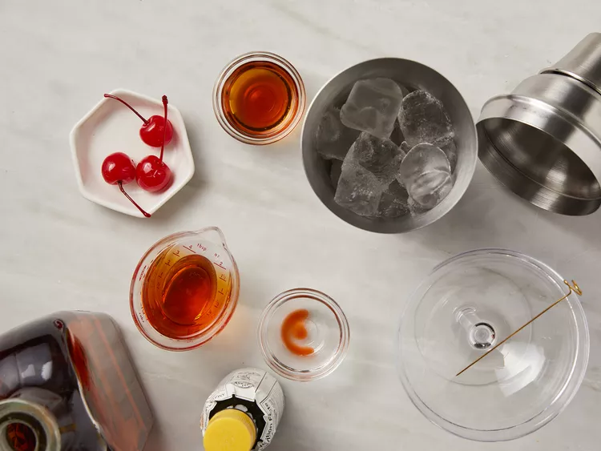
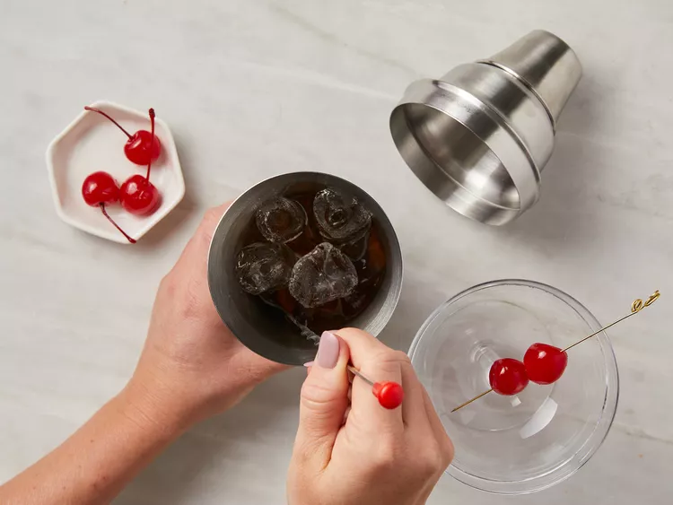
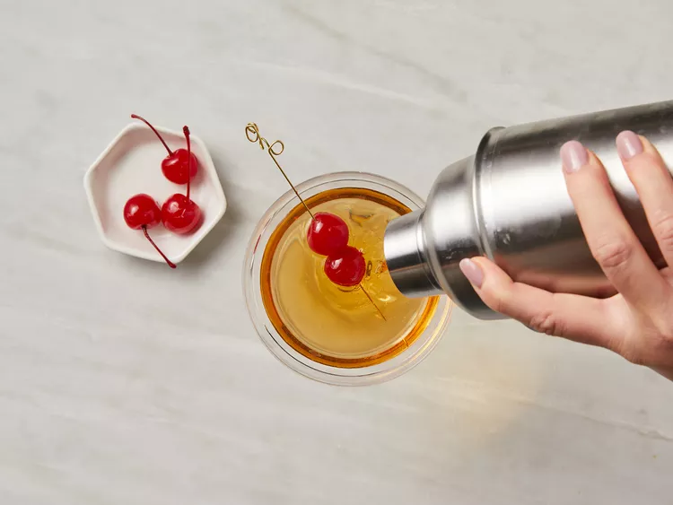
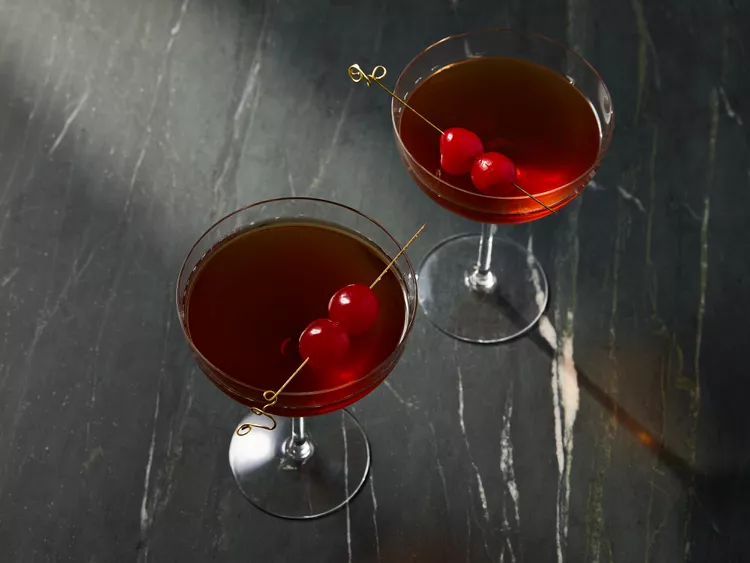

Manhattan Cocktail

Description
The Manhattan was the most famous cocktail in the world shortly after it was invented in New York City’s Manhattan Club, some time around 1880 (as the story goes). Over the years, the whiskey classic has dipped in and out of fashion before finding its footing as one of the cornerstones of the craft cocktail renaissance.
Amazingly, the drink that socialites tipped to their lips in the 19th century looks and tastes pretty much the same as the one served today at any decent cocktail bar. The Manhattan’s mix of American whiskey and Italian vermouth, enlivened with a few dashes of aromatic bitters, is timeless and tasty—the very definition of what a cocktail should be.
ingredients
- 2 fluid ounces rye whiske
- ½ fluid ounce sweet vermouth
- 1 dash Angostura bitters
- 1 cup ice cubes
- 1 maraschino cherry
Steps
- Gather all ingredients.

- Combine whiskey, vermouth, and bitters in a cocktail mixing glass. Add ice and stir until chilled.

- Strain into a chilled cocktail glass and garnish with a maraschino cherry.

- Enjoy!

Home